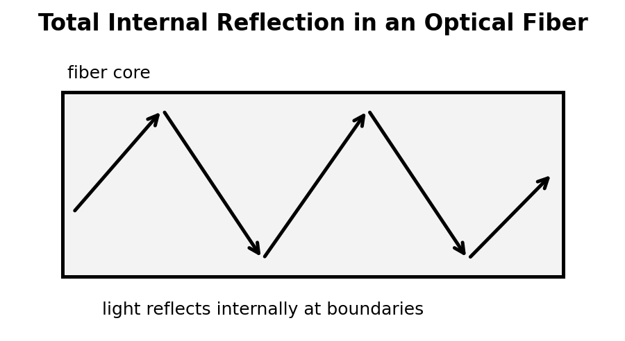

Conceptual Physics — Unit 6: Light and Optics
Assessment Plan
Unit 6: Light and Optics
Essential Standard
Students will analyze light and optical systems by describing light as an electromagnetic wave, explaining how light interacts with transparent and opaque materials, modeling reflection and mirror images, explaining refraction and total internal reflection, interpreting lenses and image formation, and applying optics ideas to real-world devices and visual phenomena.
This unit remains conceptual before computational. The following formulas and symbolic relationships are enough for the entire unit.
- Electromagnetic wave speed: $c=f\lambda$
- Index of refraction: $n=\frac{c}{v}$
- Law of reflection: $\theta_i=\theta_r$
- Snell’s Law: $n_1\sin\theta_1=n_2\sin\theta_2$
- Critical angle relationship: $\sin\theta_c=\frac{n_2}{n_1}$, when light travels from a higher-index medium to a lower-index medium
- Thin lens equation: $\frac{1}{f}=\frac{1}{d_o}+\frac{1}{d_i}$
- Magnification: $M=\frac{h_i}{h_o}$
- Light travel speed relationship: $v=\frac{d}{t}$
No more than these eight formulas/symbolic relationships should be required for Unit 6 assessments.
Learning Ladder
| Rung | I Can Statement | Science Practice | DOK | Level |
|---|---|---|---|---|
| 8 | I can design, defend, or critique a complete optics model for an unfamiliar real-world situation using ray diagrams, evidence, formulas, and optical principles. | Construct Explanations / Argue from Evidence | DOK 4 | Above |
| 7 | I can compare competing explanations of reflection, refraction, image formation, total internal reflection, or optical devices and justify which explanation better fits the evidence. | Analyze and Evaluate Models | DOK 4 | Above |
| 6 | I can connect ray diagrams, wave models, lens diagrams, formulas, and written scenarios to explain how light behaves in optical systems. | Use Models / Explain Phenomena | DOK 3 | Essential |
| 5 | I can identify and correct misconceptions about light travel, shadows, reflection, refraction, color, lenses, images, or total internal reflection. | Critique Reasoning | DOK 3 | Essential |
| 4 | I can calculate light speed relationships, index of refraction, reflection angles, refraction quantities, lens quantities, or magnification in simple situations and interpret the answer in context. | Use Mathematical Thinking | DOK 2 | Essential |
| 3 | I can interpret light-ray diagrams, mirror diagrams, refraction diagrams, total internal reflection diagrams, and lens diagrams. | Develop and Use Models | DOK 2 | Essential |
| 2 | I can define and recognize key terms such as electromagnetic wave, transparent, opaque, reflection, normal, refraction, lens, focal point, real image, virtual image, and total internal reflection. | Identify Patterns / Use Vocabulary | DOK 1 | Essential |
| 1 | I can recognize whether a situation involves light travel, absorption, transmission, reflection, refraction, dispersion, image formation, or optical technology. | Observe and Classify | DOK 1 | Essential |
Format: 3–5 minute warm-up, quick check, image prompt, vocabulary check, mini-whiteboard response, card sort, diagram labeling, optical phenomenon sort, or exit ticket
Purpose: Check whether students can recognize basic light and optics vocabulary, identify ray-diagram features, classify light interactions, and distinguish reflection, refraction, absorption, transmission, dispersion, and image formation.
Assessment Ideas
- Light Interaction Snapshot Sort Can Be Assessed After Unit 6, Section 6.1 — Students view sketches of light hitting glass, metal, paper, water, and a wall, then classify each as mostly transmission, reflection, absorption, scattering, or shadow formation.
- Reflection Diagram Labeling Can Be Assessed After Unit 6, Section 6.2 — Students label incident ray, reflected ray, normal line, angle of incidence, and angle of reflection on mirror diagrams.
- Refraction or Reflection? Can Be Assessed After Unit 6, Section 6.3 — Students classify real-world examples such as a mirror image, a bent straw in water, glare from a window, and a rainbow.
- Lens and Image Vocabulary Check Can Be Assessed After Unit 6, Section 6.4 — Students match focal point, focal length, real image, virtual image, converging lens, and diverging lens to short descriptions or sketches.
What this tells the teacher:
Students who struggle here need more support with basic optics language, ray-diagram features, and the difference between how light travels and how the eye interprets an image.
Format: Exit ticket, diagram interpretation, short calculation, ray-tracing task, ranking task, partner check, data table, image-location task, or whiteboard response
Purpose: Check whether students can apply simple formulas, interpret ray diagrams, identify image behavior, and connect light interactions to physical meaning.
Assessment Ideas
- Law of Reflection Ray Task Can Be Assessed After Unit 6, Section 6.2 — Students complete mirror ray diagrams using the normal line and law of reflection, then determine a missing angle.
- Index of Refraction and Speed Task Can Be Assessed After Unit 6, Section 6.3 — Students compare media using index of refraction data and determine where light travels faster or slower.
- Bending Toward or Away from the Normal Can Be Assessed After Unit 6, Section 6.3 — Students analyze refraction diagrams and predict whether light bends toward the normal, away from the normal, or continues straight.
- Lens Ray Diagram Interpretation Can Be Assessed After Unit 6, Section 6.4 — Students interpret simple converging-lens diagrams and identify whether the image is real or virtual, upright or inverted, larger or smaller.
What this tells the teacher:
Students at this level can usually use formulas and diagrams in familiar situations. Errors reveal whether students are confusing reflection with refraction, the normal with the surface, light speed with frequency, real images with virtual images, or lens shape with image behavior.
Format: Constructed response, misconception analysis, CER, ray-diagram critique, graph explanation, ranking explanation, gallery walk, or group whiteboard defense
Purpose: Check whether students can reason strategically, explain cause and effect, connect multiple representations, and correct common misconceptions about light and optics.
Assessment Ideas
- Mirror Image Misconception Response Can Be Assessed After Unit 6, Section 6.2 — Students respond to the claim, “A mirror reverses left and right,” and revise it using ray behavior and image location.
- Bent Straw Refraction Explanation Can Be Assessed After Unit 6, Section 6.3 — Students explain why a straw appears bent in water using light speed changes, refraction, and the observer’s line of sight.
- Rainbow and Dispersion Explanation Can Be Assessed After Unit 6, Section 6.3 — Students explain why white light separates into colors when passing through a prism or raindrop.
- Corrective Lens Reasoning Task Can Be Assessed After Unit 6, Section 6.5 — Students analyze a nearsighted or farsighted eye model and explain how a corrective lens changes the path of light to improve focus.
What this tells the teacher:
This level shows whether students understand the physics behind diagrams and vocabulary. These tasks are useful for deciding who needs reteaching on image formation, refraction, dispersion, total internal reflection, or lens behavior.
Format: Performance task, extended response, investigation reflection, modeling task, critique task, engineering analysis, or strategy defense
Purpose: Check whether students can synthesize ray diagrams, optical models, formulas, material properties, and real-world evidence in unfamiliar light and optics situations.
Assessment Ideas
- Build an Optical Path Model Can Be Assessed After Unit 6, Section 6.3 or 6.4 — Students receive a real-world optical situation involving glass, water, mirrors, or lenses and create a ray model that explains what the observer sees.
- Design a Periscope, Projector, or Magnifier Can Be Assessed After Unit 6, Section 6.2 or 6.4 — Students design or critique a simple optical device using mirrors, lenses, image formation, and ray diagrams.
- Total Internal Reflection Application Can Be Assessed After Unit 6, Section 6.3 or 6.5 — Students explain how optical fibers guide light and evaluate whether a given diagram satisfies the conditions for total internal reflection.
- Optics Claim Critique Can Be Assessed After Unit 6, Section 6.5 — Students critique a claim about anti-glare coatings, blue-light filters, mirror images, magnifying lenses, fiber optics, or “invisible” materials using evidence and optics principles.
What this tells the teacher:
DOK 4 tasks show whether students can transfer optics understanding to unfamiliar systems and defend reasoning using ray models, formulas, material properties, diagrams, and evidence.
Summative Assessment Plan
Assessment is designed for a 45-minute time limit.
The Unit 6 summative will be created as one consolidated HTML file with six versions of the assessment, an answer key, and a standardized two-page answer sheet. Test questions will be printed without workspaces so students use the answer sheet for responses and formula work.
Summative Assessment
Assessment File Structure
The summative file will include six versions of the assessment. Each version should assess the same Unit 6 standards, DOK levels, vocabulary expectations, misconception checks, diagram skills, ray-modeling skills, lens-modeling skills, and formula skills, but with varied numbers, contexts, diagrams, wording, and answer order.
Recommended Student Assessment Structure
Questions 1–16: Multiple Choice — Students answer on the standardized bubble sheet.
- 5 Questions DOK 1 — Vocabulary, basic recognition, light interactions, reflection/refraction classification, ray-diagram features, material behavior, and lens/image vocabulary.
- 6 Questions DOK 2 — Interpreting ray diagrams, applying the law of reflection, comparing refractive index and light speed, predicting bending direction, identifying lens image behavior, and using simple optical formulas.
- 4 Questions DOK 3 — Analyzing misconceptions, connecting ray diagrams to what an observer sees, explaining mirror images, refraction, dispersion, total internal reflection, and corrective lenses.
- 1 Question DOK 4 — Evaluating a model, critique, investigation-based reasoning, optical-design reasoning, or choosing the best evidence-supported explanation.
Questions 17–20: Free Response / Formula and Reasoning Questions — These are the last four questions of each assessment version. Students complete these on the back side of the standardized answer sheet in four numbered quadrants.
- Question 17: Formula / wave-speed or light-speed reasoning using $c=f\lambda$, $v=\frac{d}{t}$, or $n=\frac{c}{v}$.
- Question 18: Formula / reflection, refraction, critical angle, lens, or magnification reasoning using $\theta_i=\theta_r$, $n_1\sin\theta_1=n_2\sin\theta_2$, $\sin\theta_c=\frac{n_2}{n_1}$, $\frac{1}{f}=\frac{1}{d_o}+\frac{1}{d_i}$, or $M=\frac{h_i}{h_o}$.
- Question 19: Ray diagram, mirror diagram, refraction model, lens model, or image-formation explanation.
- Question 20: Context-rich optics application, optical-device critique, total-internal-reflection explanation, corrective-lens reasoning, or short CER-style reasoning task.
Answer Key and Answer Sheet Pages
After the six assessment versions, the summative file will include an answer key.
The final two pages of the file will be a standardized answer sheet:
- Answer Sheet Page 1: Assessment Name, Student Name, bubble area for selecting version number, and bubbles for multiple-choice questions 1–16.
- Answer Sheet Page 2: Prints on the back of Page 1 and is divided into four quadrants labeled 17, 18, 19, and 20 for the free-response formula and reasoning questions.
Question-Type Balance
- Standard wording: about 5 questions
- Inverted wording: about 5 questions
- Context-rich wording: about 6 questions
- Vocabulary / diagram / model-based wording: about 4 questions
Assessment Bank Note
The assessment bank should remain open-response, short-answer, diagram-based, ray-diagram-based, lens-model-based, optical-device-based, and explanation-based. Bank items should not be written as multiple-choice questions. Selected bank items can later be adapted into multiple-choice summative questions with misconception-based distractors for questions 1–16.
Scoring Recommendation
Suggested weighting: Multiple Choice: 16 points; Free Response: 16 points total, 4 points per quadrant; Total: 32 points.
- 4: Accurate answer, clear reasoning, correct vocabulary, correct formula use or model, and complete explanation.
- 3: Mostly correct with minor error or missing detail.
- 2: Partial understanding shown, but reasoning, diagram, graph, ray model, or calculation is incomplete.
- 1: Minimal correct physics shown.
- 0: Blank, unrelated, or no meaningful evidence of understanding.
Holistic Rubric
A — Highly Proficient
The student demonstrates a strong and flexible understanding of Unit 6 concepts. Work is accurate, well-organized, and supported by clear reasoning. The student can explain light as an electromagnetic wave, reflection, mirror images, refraction, dispersion, total internal reflection, lenses, image formation, and optical applications in familiar and unfamiliar situations. The student can interpret ray diagrams, lens diagrams, material interactions, and optical-device claims, use formulas appropriately, critique models, and defend claims using evidence.
B — Proficient
The student demonstrates solid understanding of the essential Unit 6 concepts. Most work is accurate, and the student can complete standard and moderately complex tasks independently. The student can identify light interactions, apply the law of reflection, describe refraction, interpret simple ray diagrams, distinguish real and virtual images, explain lenses, and connect optical phenomena to reflection or refraction. Explanations are generally clear, though they may lack some precision or depth.
C — Developing Proficiency
The student demonstrates partial but passable understanding of Unit 6 concepts. The student can complete many routine tasks but may need support with ray diagrams, normal-line reasoning, refraction direction, refractive index, total internal reflection, lens image formation, real versus virtual images, or explaining what an observer sees. Work may contain errors or incomplete explanations, but there is enough evidence that the student understands the main ideas.
Not Yet — Insufficient Evidence
The student does not yet demonstrate sufficient understanding of the essential Unit 6 concepts. Work shows major errors, missing reasoning, confusion between reflection and refraction, incorrect ray diagrams, weak lens interpretation, incorrect formula use, or weak connections between optical models and evidence. The student may need reteaching, additional practice, or reassessment to demonstrate proficiency.
Strictly Assessment Bank
This bank is organized by DOK so future formative versions and summative versions can be assembled quickly. The bank should remain open-response, short-answer, diagram-based, ray-diagram-based, lens-model-based, optical-device-based, and explanation-based. Bank questions should not be multiple choice.
Figure naming convention for future assessment files: use unit6-dok#-#-problem#.png or descriptive names in the figures/ folder.
Match each term to its definition.
Terms: 1. Reflection 2. Refraction 3. Transparent 4. Opaque 5. Lens
Definitions:
- A material that allows light to pass through clearly
- Bending of light when it changes speed entering a new medium
- A shaped transparent object that bends light to form images
- Bouncing of light from a surface
- A material that does not allow light to pass through
Which term best matches this definition?
“The line drawn perpendicular to a surface where a light ray strikes.”

State whether each example is best described as reflection, refraction, absorption, transmission, or shadow formation.
- Light bounces from a mirror.
- Light passes through a clear window.
- A black shirt warms in sunlight.
- A hand blocks light from a lamp.

Complete the sentence using the best vocabulary term: The spreading apart of white light into colors is called __________.

In your own words, explain the difference between a transparent material and an opaque material.
Identify whether each object most likely uses reflection, refraction, or both.
- Plane mirror
- Eyeglasses
- Periscope
- Camera lens
- Optical fiber
State whether each description refers to a real image, virtual image, or not enough information.
- An image that can be projected onto a screen
- An image that appears to come from behind a mirror
- An image seen through a magnifying glass
- An image described only as “bright”
A ray diagram shows a light ray striking a mirror. Which angle must be measured from the normal line: the angle of incidence, the angle of reflection, or both?
Classify each as a source of light, a reflector of light, or a transmitter of light.
- The Sun
- A white wall
- A clear glass window
- A flashlight bulb
- A mirror
Identify whether each example involves mainly reflection, refraction, dispersion, or total internal reflection.
- A rainbow
- A mirage
- Light guided through an optical fiber
- Seeing yourself in a mirror
- A straw appearing bent in water
In your own words, explain why we see a non-glowing object such as a book.
Which vocabulary term describes the point where parallel rays meet after passing through a converging lens?
A light ray strikes a mirror with an angle of incidence of $35^\circ$. Determine the angle of reflection.
Determine the frequency of light with wavelength $6.0\times10^{-7}\text{ m}$ using $c=3.0\times10^8\text{ m/s}$.
Light travels through a material at $2.0\times10^8\text{ m/s}$. Determine the index of refraction of the material using $n=\frac{c}{v}$ and $c=3.0\times10^8\text{ m/s}$.
A light ray enters glass from air at an angle. The light slows down. State whether the ray bends toward the normal or away from the normal, and explain briefly.

A light ray travels from glass into air at an angle and speeds up. State whether the ray bends toward the normal or away from the normal.

A plane mirror is 2 m in front of a student. Describe where the student’s image appears to be located.

A converging lens has a focal length of 10 cm. An object is placed 30 cm from the lens. Use $\frac{1}{f}=\frac{1}{d_o}+\frac{1}{d_i}$ to determine the image distance.
An image is 6 cm tall when the object is 3 cm tall. Determine the magnification.
A ray diagram shows parallel rays passing through a converging lens. Describe where the rays go after passing through the lens.

A ray diagram shows parallel rays passing through a diverging lens. Describe what happens to the rays after passing through the lens.

Light travels 900,000 km through space. Use $c=300,000\text{ km/s}$ to determine the travel time.
A ray strikes a surface along the normal line. Describe what happens to the direction of the ray when it enters a slower medium.
A student says, “A mirror reverses left and right.” Explain the misconception and revise the statement using ray behavior or front-back reversal.
A student draws the normal line along the mirror surface instead of perpendicular to it. Critique the diagram and explain how the angles should be measured.
A straw appears bent when placed in a glass of water. Explain this using refraction and the observer’s line of sight.
A student says, “Light bends because it wants to take the shortest path.” Critique the statement and revise it using change in speed between media.
A student says, “A rainbow happens because colored light is painted onto the sky.” Explain a better physics explanation using refraction, reflection, and dispersion in water droplets.
A diamond sparkles strongly. Explain how refraction and total internal reflection can contribute to this effect.
A student says, “If a material is transparent, light does not interact with it.” Critique the statement and revise it.
A student says, “A lens makes an image by creating new light.” Explain the misconception and revise the statement using ray bending and image formation.
A nearsighted eye focuses light in front of the retina. Explain why a corrective lens is needed and what it changes about the incoming light rays.

A student sees a mirage on a hot road and says, “There must be water on the road reflecting the sky.” Critique the statement and revise it using refraction.
A person underwater looks up and sees a bright circular window above. Explain how total internal reflection can limit what the person sees.
A student says, “Shadows form because darkness moves from the object to the wall.” Critique the statement and revise it using blocked light.

A student creates a ray diagram for a plane mirror and claims it shows where the image forms.
- Identify what the diagram must show for the claim to be correct.
- Explain how reflected rays help locate the virtual image.
- Explain why the image appears behind the mirror.
- Describe evidence that would prove the diagram wrong.
Design a short investigation that tests the law of reflection.
Your response should include:
- Materials
- Procedure
- What students should measure
- What pattern would support $\theta_i=\theta_r$
- One likely misconception and how the investigation addresses it
A student claims, “The straw bends in water because the water physically bends the straw.”
- Critique the claim.
- Explain what actually bends.
- Explain why the observer sees the straw as shifted.
- Write a corrected explanation.
Design a short investigation that shows refraction using water, glass, gelatin, acrylic, or a prism.
Your response should include:
- Materials
- Procedure
- What students should observe or measure
- How the evidence connects to changes in light speed
- One limitation or source of error
- One likely misconception and how the investigation addresses it
A student creates a diagram for an optical fiber but shows light leaking out at every boundary.
- Critique the model.
- Explain the conditions needed for total internal reflection.
- Revise the model in words or with a sketch description.
- Explain why optical fibers can guide light around bends.

A classroom projector uses a lens to produce a large image on a screen.
- Identify whether the screen image is real or virtual.
- Explain how the lens bends light to form the image.
- Explain why focusing the projector changes the image distance.
- Describe what evidence would show the image is real.
A student says, “A magnifying glass simply makes objects bigger.”
Evaluate the statement using object distance, focal length, ray bending, virtual images, and what the eye receives.
A company advertises a coating that “eliminates all glare from every surface.”
- Identify the optics claim being made.
- Explain why glare occurs.
- Explain what a coating might actually change.
- Critique the word “all” using reflection, material properties, and viewing angle.
A group is designing a periscope for seeing over a wall.
- Explain how mirrors should be arranged.
- Explain how the law of reflection controls the path of light.
- Identify one design error that would prevent the periscope from working.
- Defend the design using a ray diagram description.

A student compares a camera and the human eye.
Explain how both systems use lenses to focus light, identify one similarity, identify one difference, and explain how image formation depends on controlling where light rays meet.
A museum wants to display fragile artwork while reducing glare and preventing fading.
Use reflection, absorption, transmission, and material choice to propose an optical display design and defend it with evidence.
A website claims that a cloak can make an object invisible by “bending all light around it perfectly.”
- Identify the physics claim being made.
- Explain what would have to happen to light rays for the object to be invisible.
- Use refraction, reflection, absorption, and scattering to critique the claim.
- Describe what evidence would be needed to test the claim.